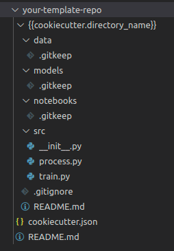

Standards - Aps01 - Part 2
Now that we've defined a repository standard, it would be nice to reuse it in new projects.
For that we will use cookiecutter to define a template repository. Then, when a new ML project is started, we will just use our template to start it.
Accept assignment
In order to do this, you will need to Accept the part 2 of the assignment. We will use this repository as our ML repository template for new projects.
Atention
Please note that APS 01 is divided into two assignments!
Task 01: Create a template
Then, clone the repository in you machine and create a folder structure similar to:

Attention
Yes, the directory name is {{cookiecutter.directory_name}}
Info!
The .gitkeep are empty files created to allow empty folders to be in the template
Question 1
Question 2
Question 3
Question 4
Question 5
Question 6
Question 7
Task 02: Testing your template
Install cookiecutter:
Then use the command:
Atention
Replace your_template_repository with the REPOSITORY NAME of your template repository.
Done! It should create the folders and files structure defined in the template.
Remember!
Delivering the assignment is the same as pushing to the main branch of your private repository of aps01-part2 and releasing a tag!
Release APS01 Part 2!
Exercise 8
Exercise 9
Exercise 10
Exercise 11
Important!
Each part of APS1 is configured in an all-or-nothing format. Each part contributes 5 to the grade (only if passed all tests for that part).
Therefore, the possible grades are 0, 5 (only one part completed), or 10.